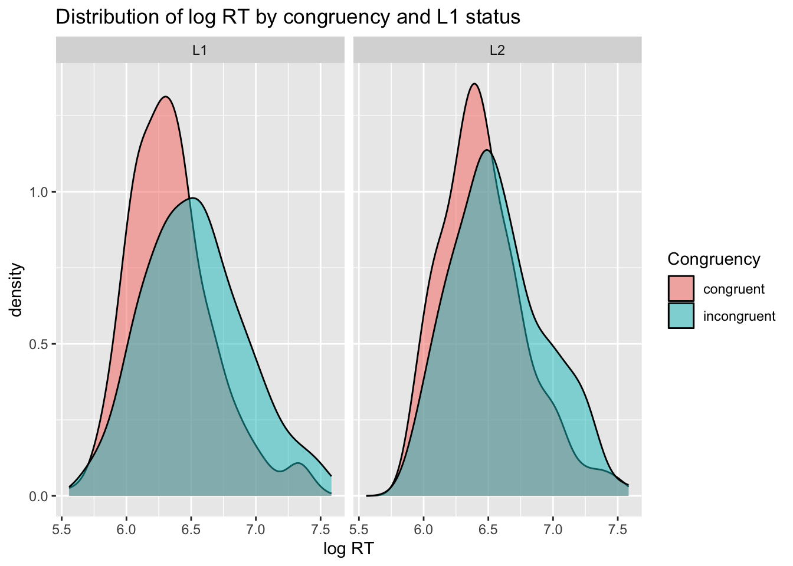
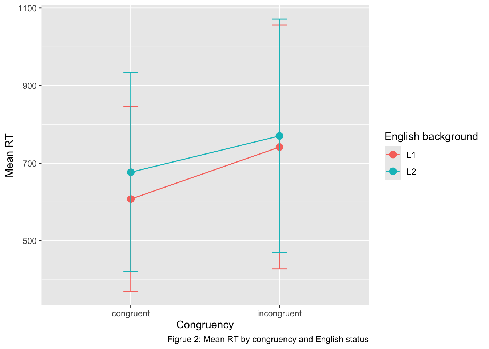
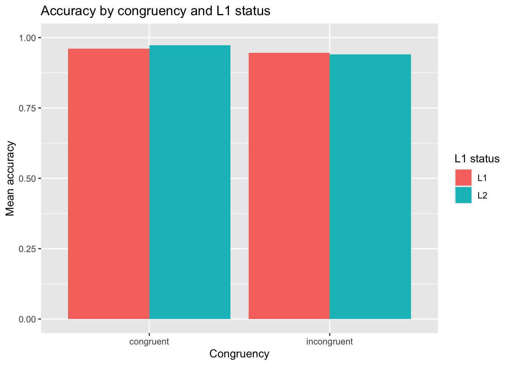

Instructions are given in italics. You should remove all instructions before submitting.
You MUST include all code and code output in this report. This is a data analysis report, not an essay or journal article.
Write a brief literature background for your Stroop task study. Explicitly state your Research Questions and, if available, your Research Hypotheses.
The Stroop task, first described by Stroop (1935), is one of the most used paradigms in cognitive psychology. In the classic paradigm, participants are presented with colored words printed in colored ink and asked to name the ink color while ignoring the word itself. The key finding is that participants are slower and less accurate when the word and ink color are incongruent compared to when they are congruent. This difference in reaction time (RT) is known as the Stroop interference effect and is thought to reflect the automaticity of word reading. In other words, because skilled readers process written words automatically, the meaning of the colored word interferes with the identification of its ink color.
The Stroop effect has also been studied in bilingual speakers. (MacLeod1991?) reviews approximately two dozen studies on this topic. He notes that a dominant language has greater potential for interference than a nondominant one, and that the pattern of interference shifts as proficiency in the L2 increases. This suggests that the degree of Stroop interference in a given language reflects the extent to which word reading has become automatized in that language. Based on this L1 English speakers, for whom English is the dominant language, are expected to show greater Stroop interference than L2 English speakers.
1.1 Research Questions/Hypotheses
Research questions
RQ 1: Are participants slower when responding to incongruent trials compared to congruent trials?
RQ 2: Does the Stroop interference effect differ between L1 and L2 English speakers
Hypotheses
RH 1: Participants will show slower reaction times on incongruent trials compared to congruent trials, reflecting the Stroop interference.
RH 2: Since automatic word reading is stronger in a first language, L1 English speakers will show a larger Stroop interference effect compared to L2 English speakers.
2 Methods
Briefly report the methods of the study (participants, materials, procedure, statistical analysis…). Note that when discussing the statistical analysis you should clearly state how the analysis results will be used to assess the RQs/RHs (be as specific and precise as you can). Include an Open Research/Data availability statement.
2.1 Participants
25 participants took part in the study, and they were divided into L1 English speakers (n = 11) and L2 English speakers (n = 14) based on their self report. Participants were recruited through convenience sampling. No formal exclusion criteria were applied.
2.2 Materials
The experiment was designed and administered using Testable. The stimuli consisted of three color words (RED, BLUE, and GREEN) presented in colored ink (red, blue, or green). Each word appeared in either a congruent condition (word and ink color match) or an incongruent condition (word and ink color do not match). Each block contained 20 critical trials (10 congruent, 10 incongruent) and 12 filler trials consisting of non-color words (CAR, SHOE, HOUSE) presented in colored ink.
2.3 Procedure
Participants completed the experiment online via Testable. They were instructed to respond to the ink color of the word by pressing the LEFT arrow key for red, the UP arrow key for blue, and the RIGHT arrow key for green as quickly and accurately as possible. Following the experimental trials, participants completed a short questionnaire asking whether English was their first language, their self-rated English proficiency, and whether they currently reside in an English-speaking country.
2.4 Statistical analysis
Data were analyzed using Bayesian multilevel modeling in R (brms). Only critical trials were retained, and RT outliers were removed (RT < 200ms or > 2000ms). A model was fitted with log RT as the outcome, with congruency, English language status, and their interaction as fixed effects, and varying intercepts and slopes for congruency by participant. The main effect of congruency was used to assess whether a Stroop effect was present, and the interaction term was used to assess whether the Stroop effect differed between L1 and L2 speakers.
2.5 Open research statement
The experimental trial file, raw data, and analysis code are available at [link to Github]. The experiment was administered via Testable and can be accessed at [https://tstbl.co/661-427].
3 Data
Remember to include all code and code output in the submission.
3.1 Read and process the data
Read the data here. If the data needs processing, like mutating columns or creating new ones, briefly explain why processing is needed and what you did. Include a description of each of the relevant columns in the data. The data was downloaded from Testable in long format, with all 25 participants’ trial results combined into a single CSV file. The file was read into R using read_csv().
Several processing steps were applied to prepare the data for analysis. First, each participant’s response to the question “Is English your first language?” (row 82 in the trial file) was extracted and used to create a new column l1_status, coded as L1 for participant who answered “Yes” and L2 for all other responses. This column identified the between-subjects grouping variable for the analysis.
The data was then filtered to retain only critical test trials (condition1 == “critical”), excluding practice and filler trials that are not relevant to the research question. RT outliers were removed, excluding trials with RT below 200ms (anticipatory responses) or above 2000ms (inattentive responses).
The relevant columns in the cleaned dataset are as follows:
filename: unique identifier for each participant, based on their Testable result file
condition2: the congruency condition of each trial
RT: reaction time in milliseconds, measured from stimulus onset to key press
correct: accuracy of the responses, coded as 1 (correct) or 0 (incorrect)
l1_status: English language status of the participant, coded as L1 (English is their first language) or L2 (English is not their first language)
library(tidyverse)
── Attaching core tidyverse packages ──────────────────────── tidyverse 2.0.0 ──
✔ dplyr 1.1.4 ✔ readr 2.1.5
✔ forcats 1.0.1 ✔ stringr 1.5.2
✔ ggplot2 4.0.0 ✔ tibble 3.3.0
✔ lubridate 1.9.4 ✔ tidyr 1.3.1
✔ purrr 1.1.0
── Conflicts ────────────────────────────────────────── tidyverse_conflicts() ──
✖ dplyr::filter() masks stats::filter()
✖ dplyr::lag() masks stats::lag()
ℹ Use the conflicted package (<http://conflicted.r-lib.org/>) to force all conflicts to become errors
#read raw data fileraw <-read_csv("data/661427_260428_102656_long.csv")
Rows: 2025 Columns: 38
── Column specification ────────────────────────────────────────────────────────
Delimiter: ","
chr (23): filename, browser, version, OS, OS_lang, GMT_timestamp, local_time...
dbl (15): screenWidth, screenHeight, duration_s, duration, duration_m, rowNo...
ℹ Use `spec()` to retrieve the full column specification for this data.
ℹ Specify the column types or set `show_col_types = FALSE` to quiet this message.
#extract rowNo 82 (L1 question) for each participantl1_info <- raw |>filter(rowNo ==82) |>select(filename, l1_response = response)#merge l1_info and create english_status column# 'Yes' = L1 English, anything else = L2raw <- raw |>left_join(l1_info, by ='filename') |>mutate(l1_status =ifelse(l1_response =='Yes', 'L1', 'L2') )#filter for critical trials and select relevant columns cleaned_data <- raw |>filter(type =='test', condition1 =='critical') |>select(filename, stim1, textColor, condition2, RT, correct, l1_status) |>mutate(condition2 =factor(condition2, levels =c('congruent', 'incongruent')),l1_status =factor(l1_status, levels =c('L1', 'L2')) ) |>filter(RT >200, RT <2000)
3.2 Plot the data
Create relevant plots: for each, include a description of the plot (type, axes, colours used and so on) and a description of relevant patterns.
Plot 1: RT distribution
This is a density plot showing the distribution of log-transformed reaction times across congruency conditions, faceted by L1_status. The x-axis shows log RT and the y-axis shows density. Congruency donition is indicated by fill color, with congruent trials shown in pink and incongruent trials shown in teal. The left panel shows L1 English speakers and the right panel shows L2 English speakers.
library(ggplot2)#plot1: RT distribution by congruency and L1_statuscleaned_data |>ggplot(aes(x=log(RT),fill=condition2)) +geom_density(alpha=0.5) +facet_wrap(~l1_status) +labs(title ='Distribution of log RT by congruency and L1 status',x ='log RT',fill ='Congruency' )

In both panels, the incongruent distribution is shifted rightward relative to the congruent distribution, indicating that participants were generally slower on incongruent trials regardless of language background, and this is consistent with a Stroop interference effect. The shift appears visually larger in the L1 panel compared to the L2 panel, suggesting that the interference effect may be greater for L1 English speakers.
Plot 2: Mean log RT
This is a point plot showing mean log-transformed reaction time for each congruency condition, with congruency on the x-axis and mean log RT on the y-axis. L1 status is indicated by color, with L1 speakers shown in pink and L2 speakers in teal. Error bars represent one standard deviation above and below the mean log RT. Points for the same L1 status group are connected by a line to make the congruency effect easier to follow.
#plot2: mean log RT by congruency and english_statuscleaned_data |>group_by(l1_status,condition2) |>summarize(mean_logRT =mean(log(RT)),sd_logRT =sd(log(RT)) ) |>ggplot(aes(x = condition2, y = mean_logRT,color = l1_status, group = l1_status)) +geom_point(size =3) +geom_line()+geom_errorbar(aes(ymin = mean_logRT - sd_logRT,ymax = mean_logRT + sd_logRT),width =0.1) +labs(title ='Mean log RT by congruency and L1 status',x ='Congruency',y ='Mean log RT',color ='L1 status' )
`summarise()` has grouped output by 'l1_status'. You can override using the
`.groups` argument.

Both groups show a clear increase in mean log RT from congruent to incongruent trials, consistent with a Stroop interference effect in both L1 and L2 English speakers. The slow of the increase appears steeper for L1 speakers than L2 speakers, suggesting a larger congruency effect for the L1 group, which is consistent with the predicted direction. L2 speakers show higher overall log RT in both conditions, suggesting they are generally slower to respond. The error bars overlap substantially between groups, reflecting considerable variability across participants, which is expected given the relatively small sample size.
Plot 3: Accuracy
This is a bar plot showing the mean accuracy for each combination of congruency condition and L1 status. Congruency is shown on the x-axis and mean accuracy on the y-axis, ranging from 0 to 1. L1 status is indicated by fill color, with L1 speakers in pink and L2 speakers in teal. Bars for each group are displayed side by side within each congruency condition.
#plot3: accuracy by congruency and L1 statuscleaned_data |>group_by(l1_status,condition2) |>summarize(mean_acc =mean(correct)) |>ggplot(aes(x = condition2,y = mean_acc,fill = l1_status)) +geom_col(position ='dodge') +labs(title ='Accuracy by congruency and L1 status',x ='Congruency',y ='Mean accuracy',fill ='L1 status' ) +ylim(0,1)
`summarise()` has grouped output by 'l1_status'. You can override using the
`.groups` argument.

Accuracy is uniformly high across all conditions, with all bars approaching 1.0, indicating a ceiling effect. A small decrease in accuracy is visible from congruent to incongruent trials in both groups, consistent with the expected direction of a Stroop interference effect. The difference between L1 and L2 speakers within each congruency condition is minimal.
3.3 Summarize the data
Calculate and report appropriate summary measures for relevant variables in the data. The table below reports mean RT, SD of RT, mean log RT, SD of log RT, mean accuracy, and number of trials for each combination of congruency condition and L1 status groups.
L1 English speakers showed a mean RT of 607ms on congruent trials and 742ms on incongruent trials, reflecting a Stroop interference effect of approximately 134ms. L2 English speakers showed a mean RT of 677ms on congruent trials and 770ms on incongruent trials, reflecting a small interference effect of approximately 94ms. Both groups show the expected pattern of slower response on incongruent trials. The Stroop effect appears numerically larger for L1 speakers than L2 speakers, consistent with the predicted direction. Accuracy was high across all conditions, exceeding 0.94 in all groups, indicating a ceiling effect.
4 Regression modelling
Write an explanation of the regression model(s) you will run to answer the chosen research question. Fit the model and get a model summary and relevant model plots. Report the results of the model. To investigate whether L1 status modulates the Stroop interference effect, a Bayesian multilevel model was fitted using the brms package in R. Log-transformed reaction time was used as the outcome variable, with a Gaussian family. The model included congruency (congruent vs. incongruent), English status (L1, vs. L2), and their interaction as fixed effects.
The interaction term is of primary interest, as it tests whether the size of the Stroop effect differs between L1 and L2 English speakers. Varying intercepts and varying slopes for congruency were included by participant, allowing baseline RT and the congruency effect to differ across individuals. Default weakly informative priors were used.
library(brms)
Loading required package: Rcpp
Loading 'brms' package (version 2.23.0). Useful instructions
can be found by typing help('brms'). A more detailed introduction
to the package is available through vignette('brms_overview').
Attaching package: 'brms'
The following object is masked from 'package:stats':
ar
Family: gaussian
Links: mu = identity
Formula: log(RT) ~ condition2 * l1_status + (1 + condition2 | filename)
Data: cleaned_data (Number of observations: 1162)
Draws: 4 chains, each with iter = 2000; warmup = 1000; thin = 1;
total post-warmup draws = 4000
Multilevel Hyperparameters:
~filename (Number of levels: 25)
Estimate Est.Error l-95% CI u-95% CI Rhat
sd(Intercept) 0.15 0.03 0.10 0.21 1.00
sd(condition2incongruent) 0.05 0.03 0.00 0.11 1.00
cor(Intercept,condition2incongruent) 0.43 0.40 -0.52 0.97 1.00
Bulk_ESS Tail_ESS
sd(Intercept) 1468 2194
sd(condition2incongruent) 1033 903
cor(Intercept,condition2incongruent) 2014 1762
Regression Coefficients:
Estimate Est.Error l-95% CI u-95% CI Rhat
Intercept 6.35 0.05 6.25 6.45 1.00
condition2incongruent 0.18 0.03 0.12 0.25 1.00
l1_statusL2 0.11 0.07 -0.03 0.24 1.00
condition2incongruent:l1_statusL2 -0.06 0.05 -0.15 0.03 1.00
Bulk_ESS Tail_ESS
Intercept 1227 1968
condition2incongruent 2668 2765
l1_statusL2 1217 2024
condition2incongruent:l1_statusL2 2610 2534
Further Distributional Parameters:
Estimate Est.Error l-95% CI u-95% CI Rhat Bulk_ESS Tail_ESS
sigma 0.32 0.01 0.31 0.33 1.00 4987 2817
Draws were sampled using sampling(NUTS). For each parameter, Bulk_ESS
and Tail_ESS are effective sample size measures, and Rhat is the potential
scale reduction factor on split chains (at convergence, Rhat = 1).
The intercept represents the estimated baseline log RT for L1 English speakers on congruent trials (6.35, 95% CrI[6.25, 6.45]). The main effect of congruency for L1 speakers was 0.18 log RT units (95% CrI [0.12, 0.25]), indicating that incongruent trials were credible slower than congruent trials, as the 95% CrI excludes 0, providing clear evidence of a Stroop interference effect in L1 English speakers. L2 speakers were estimated to be slightly slower overall than L1 speakers (0.11, 95% CrI[-0.02, 0.24]), though this difference was not conclusive as the CrI includes 0.
The interaction term between congruency and English status (-0.06, 95% CrI[-0.15, 0,.03]) is of primary interest because it tests whether the Stroop effect differs between groups. The negative estimate indicates that L2 speakers show a smaller Stroop interference effect than L1 speakers, consistent with the predicted direction. However, the 95% CrI includes 0, meaning that there is no conclusive evidence that the two groups differ in the magnitude of the Stroop effect. The random effect indicates meaningful variaility in baseline RT across participants (sd(Intercept) = 0.15), confirming that individuals differ in their overall response speed, while variability in the Stroop effect across participants was small (sd(condition2incongruent) = 0.05).
Both groups show an increase in model-estimated log RT from congruent to incongruent trials, consistent with a Stroop interference effect in both L1 and L2 English speakers. The increase appears slightsly larger for L1 speakers than L2 speakers, reflecting the numerically larger interference effect observed in the model coefficients. The credible intervals overlap substantially between groups, particularly on incongruent trials, which is consistent with teh interaction term whose 95% CrI included 0, indicating uncertainty about whether the groups genuinely differ in the magnitude of the Stroop effect.
The Stroop effect for L1 English speakers was credibly positive, with a 90% CrI of [0.142, 0.226] and a 95% CrI of [0.128, 0.238], both excluding 0. This provides clear evidence of a Stroop interference effect in L1 English speakers. Similarly, the Stroop effect for L2 English speakers was also credibly positive, with a 90% CrI of [0.084, 0.160] and 95% CrI of [0.074, 0.172], both excluding 0, indicating a Stroop interference effect in L2 English speakers as well.
For the group difference, the 90% of CrI is [-0.119, -0.004], which excludes 0, suggesting that at 90% probability the Stroop effect is smaller for L2 speakers than L2 speakers. However, the 95% CrI [-0.136, 0.013] includes 0, indicating uncertainty about whether the groups genuinely differ at 95% confidence. The results are therefore inconclusive as to whether English language status modulates the Stroop interference, though the direction of the difference is consistent with the prediction than L1 English speakers show greater interference than L2 English speakers.
5 Discussion
Write a brief discussion of the your model results in light of the research question.
The results provided clear evidence in support of RH 1. Both L1 and L2 English speakers showed credibly slower reaction times on incongruent trials than congruent trials, with the Stroop effect for L1 speakers estimated at 0.18 log RT units (95% CrI [0.128, 0.238]) and for L2 speakers at 0.12 log RT units (95% CrI[0.04, 0.172]). This is consistent with the well-established Stroop interference effect, whereby the automatic reading of a colored word interferes with the identification of its ink color.
With respect RQ 2, the results were inconclusive. The group difference was in the predicted direction, with L1 English speakers showing a numerically larger Stroop effect than L2 English speakers, and the 90% CrI for the difference excluded 0 [-0.119, -0.004], providing weak evidence consistent with RH 2. However, the 95% CrI included 0 [-0.136, 0.013], meaning the data are also compatible with no group difference. This inconclusiveness can likely be attributed in part to the small sample size, which limits the precision of the estimates. Futuer research with larger samples would be needed to draw more definitely conclusions about whether English language status modulates the Stroop interference effect.